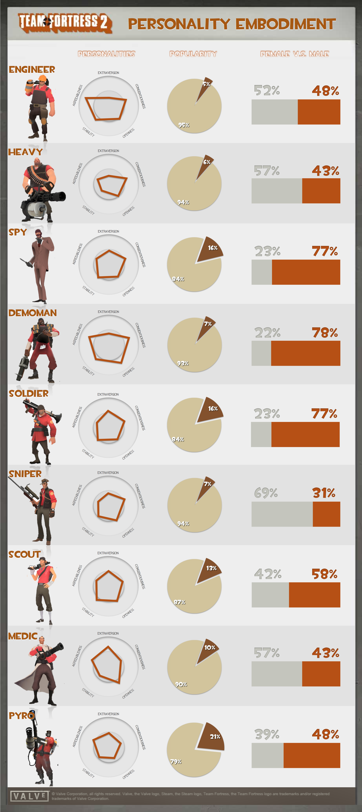

Personality Embodiment in Multicharacter Video Games
infographic designSketch 2
This is the Computer-Mediated Communications course project.
This project aims to uncover the factors influencing the character selection process and to explore the relationship between a player's personality and his perception of the personality of his chosen character. Because players of multicharacter games spend so much time in an embodied state, we theorize that players will prefer to play characters who they perceive to be similar to themselves, and that they will likewise disfavor characters with contrasting personalities to their own.
Below is the data visualization of the research findings. please read our final research paper If you are interested in details.

